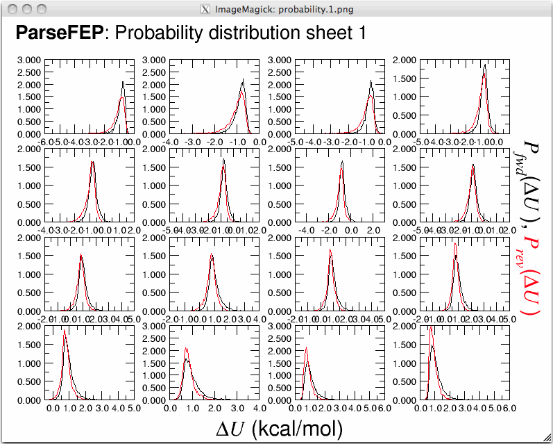
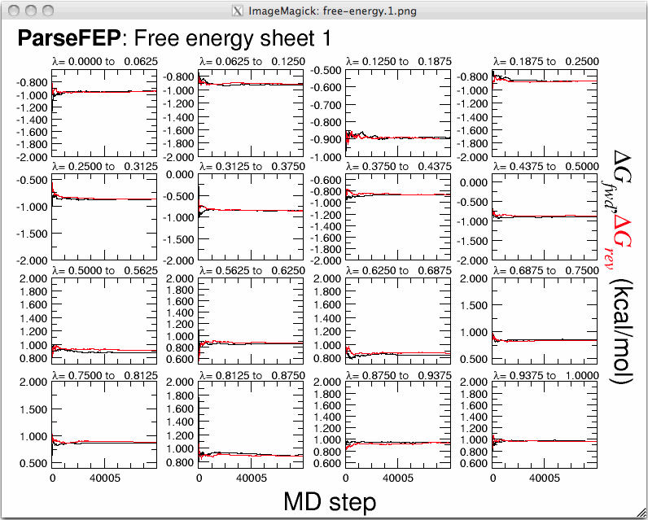
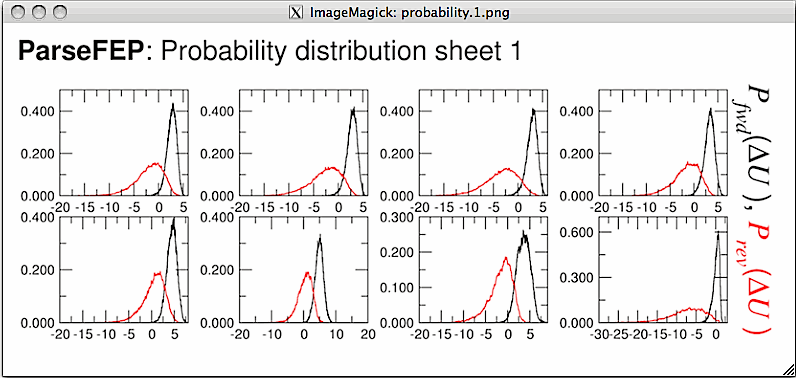

ParseFEP consists of a set of tools for the analysis of free-energy perturbation (FEP) calculations carried out within NAMD.
FEP estimator. Based on the output file of an FEP calculation, i.e. the alchOutFile file, ParseFEP computes the free-energy difference and provides an estimate of the statistical error.
Bidirectional FEP calculations. If the transformation is performed bidirectionally (1), the results of the forward and the backward simulations can be combined in the form of the simple-overlap sampling (SOS) estimator, or the Bennett acceptance-ratio (BAR) estimator (2) of the free energy. For each approach, an estimator of the statistical error is supplied. Because combination of the statistical data accrued in bidirectional FEP calculations reduces the variance, it is recommended to carry out the simulation in both the forward and the backward directions. The BAR estimator corresponds to the maximum-likelihood value of the free energy and is obtained self-consistently, using as an initial guess the result of the FEP calculation.
Pictorial representation. For unidirectional FEP calculations, ParseFEP provides a graphical representation of the underlying probability distribution, the Boltzmann weight, and the product of the two. For bidirectional FEP calculations, ParseFEP displays the probability distributions characterizing the forward and the backward transformations. These distibutions are shown for all the windows, or strata, found in the alchOutFile file. It is, therefore, assumed that the output files for the FEP calculations performed in the two directions contain the same number of intermediate states.
Comprehensive error analysis. The error associated to free-energy estimates embraces contributions of different nature, a statistical component, namely the variance of the free-energy estimator, and a systematic component, that is, the bias arising from the finite length of the simulation. ParseFEP computes the variance for the three, i.e. FEP, SOS and BAR, free-energy estimators, thereby providing an assessment of the precision of the calculation. In addition, it estimates the bias as the relative inaccuracy of the free-energy calculation, based on the degree of overlap of the underlying probability distributions (3).
Monitoring the convergence. ParseFEP plots the evolution of the free energy as a function of the number of molecular-dynamics steps. Only the information utilized towards the estimation of the free-energy difference, i.e. past alchEquilSteps, is displayed. In the case of bidirectional FEP calculations, the evolution of the free energy is shown for both the forward and the backward transformations.
Gram-Charlier interpolation. The statistical information accumulated in the alchOutFile file can be employed to model the underlying probability distribution. The latter can be described in terms of a product of a Gaussian distribution by a series of Hermite polynomials, i.e. a Gram-Charlier expansion (3). Convergence of the Gram-Charlier expansion at a given order represents a relevant measure of how well-defined the probability distribution is.
Enthalpies and entropies. The perturbation formalism used to infer free-energy differences can be generalized for the determination of enthalpy and entropy differences (3). These estimates are inherently less accurate than those of the free energy, because they involve averages of the total energy and the computation of a difference of two, independently measured large numbers, subject to large fluctuations.
Command-line user interface. ParseFEP can now be run in text mode, that is without its GUI, which may be useful for batch analyses of FEP calculations. This version of the plugin uses the very intuitive syntax — parsefep <option 1> <option 2> ..., with the following options:
-forward <file name>: FEP alchOutFile file for the forward transformation,
-entropy: Compute enthaply and entropy differences,
-gc <max order>: Gram-Charlier expansion at a given order,
-gauss: Gaussian approximation to model the underlying probability distribution,
-backward <file name>: FEP alchOutFile file for the backward transformation,
-<sos|bar>: use the SOS or BAR estimator.
References
(1) Pohorille, A.; Jarzynski, C.; Chipot, C. Good practices in free-energy calculations. J. Phys. Chem. B 2010, 114, 10235-10253.
(2) Bennett, C. H. Efficient estimation of free energy differences from Monte Carlo data. J. Comp. Phys. 1976, 22, 245-268.
(3) Chipot, C.; Pohorille, A. (Eds.) Free energy calculations. Theory and applications in chemistry and biology. Springer Verlag, 2007.
FEP estimator. Based on the output file of an FEP calculation, i.e. the alchOutFile file, ParseFEP computes the free-energy difference and provides an estimate of the statistical error.
Bidirectional FEP calculations. If the transformation is performed bidirectionally (1), the results of the forward and the backward simulations can be combined in the form of the simple-overlap sampling (SOS) estimator, or the Bennett acceptance-ratio (BAR) estimator (2) of the free energy. For each approach, an estimator of the statistical error is supplied. Because combination of the statistical data accrued in bidirectional FEP calculations reduces the variance, it is recommended to carry out the simulation in both the forward and the backward directions. The BAR estimator corresponds to the maximum-likelihood value of the free energy and is obtained self-consistently, using as an initial guess the result of the FEP calculation.
Pictorial representation. For unidirectional FEP calculations, ParseFEP provides a graphical representation of the underlying probability distribution, the Boltzmann weight, and the product of the two. For bidirectional FEP calculations, ParseFEP displays the probability distributions characterizing the forward and the backward transformations. These distibutions are shown for all the windows, or strata, found in the alchOutFile file. It is, therefore, assumed that the output files for the FEP calculations performed in the two directions contain the same number of intermediate states.
Comprehensive error analysis. The error associated to free-energy estimates embraces contributions of different nature, a statistical component, namely the variance of the free-energy estimator, and a systematic component, that is, the bias arising from the finite length of the simulation. ParseFEP computes the variance for the three, i.e. FEP, SOS and BAR, free-energy estimators, thereby providing an assessment of the precision of the calculation. In addition, it estimates the bias as the relative inaccuracy of the free-energy calculation, based on the degree of overlap of the underlying probability distributions (3).
Monitoring the convergence. ParseFEP plots the evolution of the free energy as a function of the number of molecular-dynamics steps. Only the information utilized towards the estimation of the free-energy difference, i.e. past alchEquilSteps, is displayed. In the case of bidirectional FEP calculations, the evolution of the free energy is shown for both the forward and the backward transformations.
Gram-Charlier interpolation. The statistical information accumulated in the alchOutFile file can be employed to model the underlying probability distribution. The latter can be described in terms of a product of a Gaussian distribution by a series of Hermite polynomials, i.e. a Gram-Charlier expansion (3). Convergence of the Gram-Charlier expansion at a given order represents a relevant measure of how well-defined the probability distribution is.
Enthalpies and entropies. The perturbation formalism used to infer free-energy differences can be generalized for the determination of enthalpy and entropy differences (3). These estimates are inherently less accurate than those of the free energy, because they involve averages of the total energy and the computation of a difference of two, independently measured large numbers, subject to large fluctuations.
Command-line user interface. ParseFEP can now be run in text mode, that is without its GUI, which may be useful for batch analyses of FEP calculations. This version of the plugin uses the very intuitive syntax — parsefep <option 1> <option 2> ..., with the following options:
-forward <file name>: FEP alchOutFile file for the forward transformation,
-entropy: Compute enthaply and entropy differences,
-gc <max order>: Gram-Charlier expansion at a given order,
-gauss: Gaussian approximation to model the underlying probability distribution,
-backward <file name>: FEP alchOutFile file for the backward transformation,
-<sos|bar>: use the SOS or BAR estimator.
References
(1) Pohorille, A.; Jarzynski, C.; Chipot, C. Good practices in free-energy calculations. J. Phys. Chem. B 2010, 114, 10235-10253.
(2) Bennett, C. H. Efficient estimation of free energy differences from Monte Carlo data. J. Comp. Phys. 1976, 22, 245-268.
(3) Chipot, C.; Pohorille, A. (Eds.) Free energy calculations. Theory and applications in chemistry and biology. Springer Verlag, 2007.
Note. On platforms running a Unix-like operating system, it is assumed that XMGrace and ImageMagick (display) are installed for visualization purposes. On Windows platforms, use is made of the Multiplot plotting program.
How to cite ParseFEP. Liu, P.; Dehez, F.; Cai, W.; Chipot, C. A toolkit for the analysis of free-energy perturbation calculations, J. Chem. Theor. Comput. 2012, 8, 2606-2616.
Contributors. Chris Chipot (chipot@illinois.edu), Ying-Chih Chiang (yingchihchiang@gmail.co) and Liu Peng (superdirac@gmail.com).
Figure 1. ParseFEP graphical user interface

Figure 2. Probability distributions for a bidirectional calculation.

Figure 3. Evolution of the free energy in a bidirectional calculation.

Figure 4. Error analysis based on overlapping distributions.